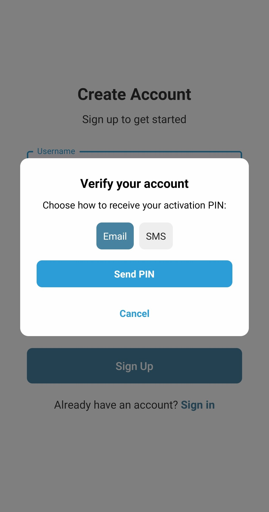
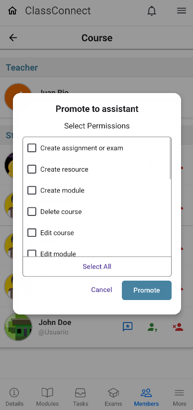
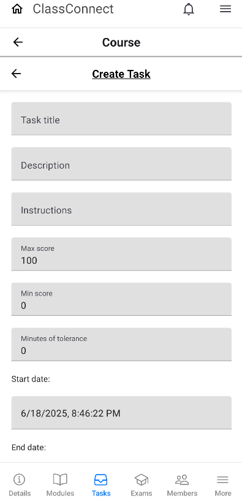

When you first open the app, you’ll be presented with the welcome
screen:
To create a new account, you have two options:
Registering with the built-in form by pressing on sign
up
Complete the registration form with your details:
After submitting the form, you will receive a 6-digit PIN via
email or SMS:

Examples:
Registering via Google:
Sign In
To access your account, choose one of the following login methods:
Using the email and password login form
Logging in with Google (if registered via Google):
Using biometrics: This option lets you log in
with fingerprint or face ID, quickly accessing the last used
account on the device.
Reset Password
If you forgot your password or never set one (because you registered
with google), tap the
"Reset Password" button on the login screen.
You will then be taken to the password reset form:
After submitting your email, you'll receive a verification code. Enter
this code along with your new password on the next screen to complete
the reset process.
Joining a Course
Once logged in, the home screen will be displayed:
Tap the “Join Course” button to see the course selection screen:
Press “View Course” to preview the course details:
Then tap “Join Course” to enroll in the course:
Creating a Course
From the home screen, press the “+” button to begin creating a new
course:
Fill in all required information, such as title, description, and
other course details. Once done, press the “Create Course” button to
finalize:
Editing a Course
To make changes to a course, navigate to the “Courses” section from
the top menu:
Select the course you want to edit and tap the “Edit” button to open
the course form. Update any details as needed and confirm the changes:
Deleting a Course
To remove a course, go to “My Courses” and press the “Delete” button
next to the course you want to remove:
You can also delete a course by opening the course page, tapping
“More” and selecting “Settings”, where you’ll find the delete option:
Completing Your Profile
After registration, you'll receive a prompt to complete your profile.
Pressing it will take you to the profile editing screen:
Fill in your full name, personal description, and optionally change
your profile picture. Once finished, tap “Save Changes” to apply your
updates.
Selecting Notifications
To manage notification preferences, tap the bell icon on the home
screen:
Then, press the gear icon inside the notification panel to open the
settings. Choose which notifications you’d like to receive and press
“Save & Close”:
Faving a Course
If you are enrolled in several courses, you can mark your favorites by
going to “My Courses” and tapping the star icon next to a course:
Favorited courses will appear in a separate section for quicker
access.
Promoting Assistants
Teachers can assign assistant roles to students by going to the
“Members” section of the course:
Tap the green person icon next to the student you want to promote. A
dialog will appear where you can configure their assistant
permissions:

Modules and Resources
Within a course, navigate to the “Modules” section to access all
materials uploaded by instructors. These can include documents,
images, videos, and other resources:
Tap a module to view its associated content:
Tasks and Exams
Go to the “Tasks” and “Exams” sections to see all activities available
for submission. You will also find a history of completed or expired
items here:
Course Members
In the “Members” section, you can view a complete list of users
enrolled in the course, including teachers, assistants, and students:
Tapping on any member's name will open their profile and display basic
information.
Course Forum
Access the forum by going to “More” > “Forum”. There, you can browse,
post, and interact with questions from other members of the course:
To ask a question, fill in the required fields such as title,
description, and tags. Optionally, you may attach files:
Once posted, questions can be edited or deleted. Other users can
upvote, downvote, or reply to questions using the “Write Answer”
button.
My Grades
To check your performance, navigate to “More” > “My Grades”. This
section shows a summary of your grades across tasks and exams:
Creating a Module
To add learning content to your course, navigate to the “Modules”
section and tap the “+” button:
Enter the module's title, description, and any other required
information. Once complete, tap the save button to create the module.
Creating a Resource
Inside a module, tap the “+” button to add a new resource. You’ll be
prompted to fill in details such as the resource name, type (e.g.,
PDF, video), and an optional file attachment:
After completing the form, save the resource to make it available
within the module.
Creating a Task
Go to the “Tasks” section and tap the “+” button to start creating a
new task or exam:

You can include different question types such as multiple-choice,
open-ended, or file-upload questions. Each question may have an image,
and you can remove or reorder them as needed.
Once you're finished, tap “Create Task” to save the activity. This
same process applies when creating exams.
Giving and Viewing Feedback
Teachers can provide feedback to students by accessing the “Members”
section and pressing the blue comment icon next to the student's name:
A dialog will appear where you can write a comment and assign a
rating. Students can view received feedback from the top-right menu,
along with an optional AI-generated summary if available.
Completing an Exam
To take an exam, go to the “Exams” section of the course. You will see
a list of available assessments with their current status: pending, in
progress, completed, or overdue:
Tap on the exam you wish to take. If it hasn't started, you’ll see a
start screen. Otherwise, the exam will open directly for you to begin
answering questions.
After submission, the status will update accordingly. You’ll be able
to revisit completed exams to review your results. This flow also
applies to task completion.